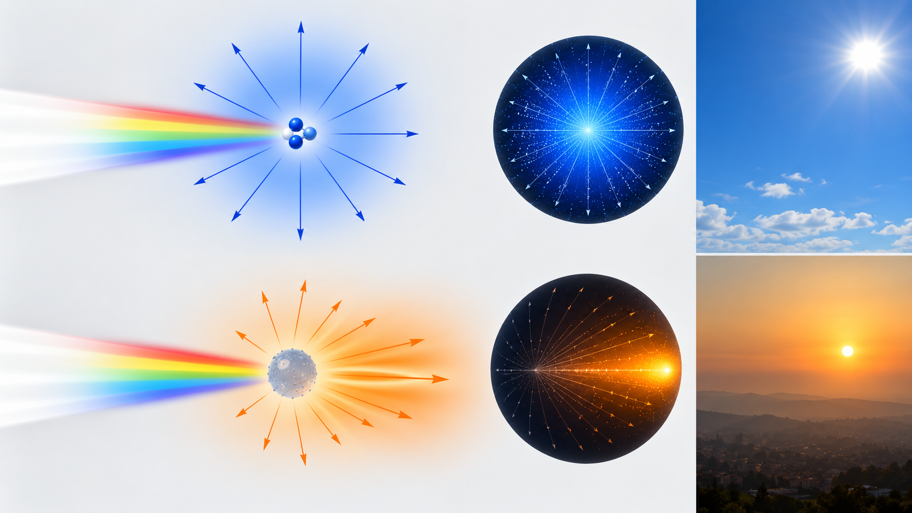
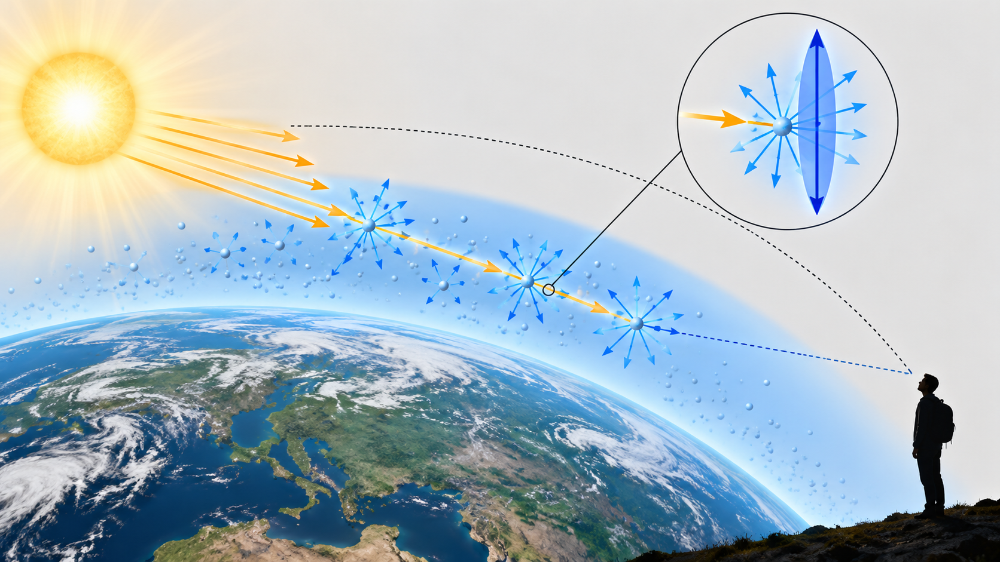
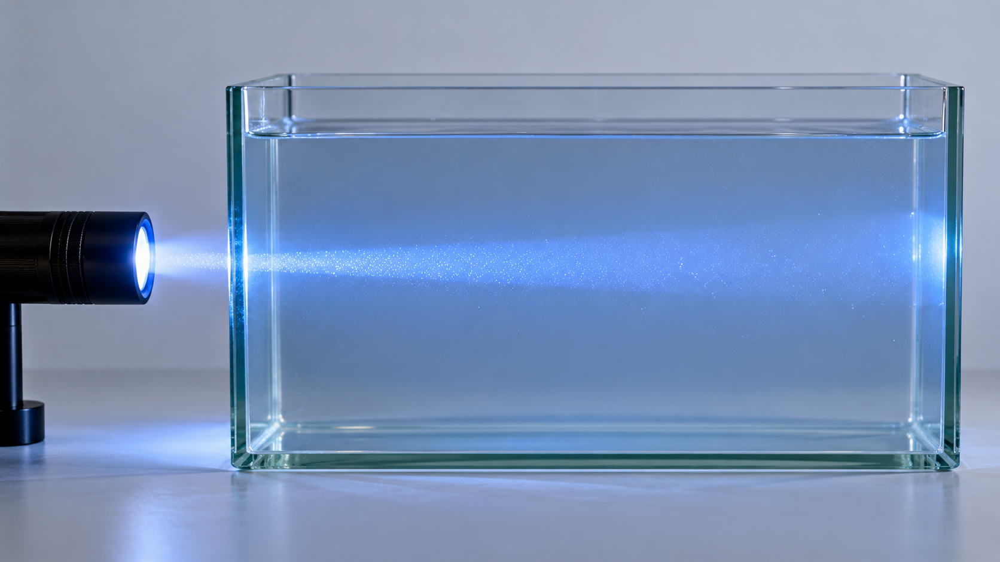

Livello intuitivo: Il fascio diventa visibile lateralmente quando qualcosa ne devia una parte verso i nostri occhi: polvere, goccioline o particelle in acqua.
Per essere maggiormente rigorosi: Rayleigh è un’approssimazione per particelle molto più piccole della lunghezza d’onda. La diffusione di Mie e le nuvole non si spiegano con la sola legge della quarta potenza.
Obiettivi di apprendimento
- Confrontare i regimi di Rayleigh e Mie.
- Spiegare il colore e la polarizzazione del cielo.
- Descrivere l’effetto Tyndall.
La luce incontra particelle
Quando la luce interagisce con molecole o particelle, parte dell’energia viene ridistribuita in altre direzioni. Dimensione, forma e indice di rifrazione delle particelle determinano intensità, colore e direzione della luce diffusa.
Diffusione di Rayleigh
Il regime di Rayleigh si applica quando le particelle sono molto più piccole della lunghezza d’onda. Per particelle non assorbenti, l’intensità diffusa varia approssimativamente come:
Cosa Vuol Dire?
Livello intuitivo: Nel regime di Rayleigh, a parità del resto, la diffusione varia come uno diviso la quarta potenza della lunghezza d’onda.
Dimezzare aumenta il fattore di diffusione di 16 volte: le lunghezze d’onda corte sono deviate più efficacemente.
Per essere maggiormente rigorosi: Particelle molto piccole rispetto a . Il simbolo indica proporzionalità, non una formula completa per l’intensità assoluta.
Le lunghezze d’onda corte vengono quindi diffuse più efficacemente. Questo contribuisce al colore azzurro del cielo. Al tramonto, la luce percorre un tratto atmosferico maggiore e molte componenti corte vengono diffuse fuori dalla linea di vista, lasciando prevalere tonalità arancioni e rosse.
Diffusione di Mie
Quando le dimensioni delle particelle sono confrontabili con la lunghezza d’onda, si entra nel regime descritto dalla teoria di Mie. La dipendenza dal colore è generalmente più debole e la diffusione è spesso concentrata in avanti. Goccioline e aerosol possono così apparire bianchi o grigi.
Rayleigh e Mie non sono due intervalli separati da una dimensione universale: il regime dipende dal parametro e dalle proprietà ottiche della particella.

Polarizzazione del cielo
La luce diffusa dall’atmosfera è parzialmente polarizzata. Nel modello di Rayleigh, la polarizzazione è massima per direzioni di osservazione vicine a rispetto al Sole. Aerosol, riflessioni multiple e nuvole modificano questo schema ideale.

Effetto Tyndall
L’effetto Tyndall rende visibile il percorso di un fascio che attraversa un colloide o una sospensione fine. La luce diffusa lateralmente raggiunge l’osservatore, mentre in una soluzione molecolare omogenea il fascio è molto meno visibile. Non conviene attribuire all’effetto un intervallo dimensionale rigido: il risultato dipende anche dalla lunghezza d’onda e dal contrasto di indice.
